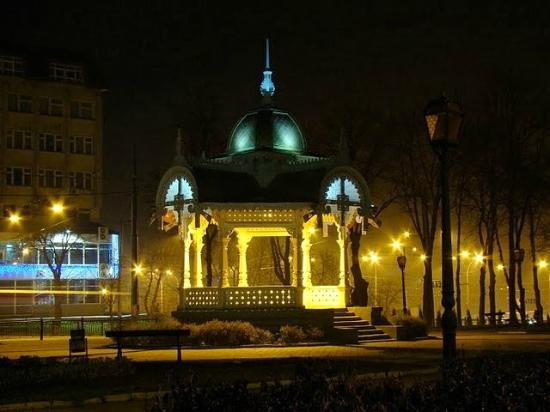

Опис альтанки
- Опис альтанки
- Історія створення
- Галерея
Сумська альтанка — символ міста Суми, розташована біля Сумського краєзнавчого музею. Автором проекту майбутнього символу міста став мешканець Сум, Матвій Щавельов, уродженець Курської губернії, який служив у земській управі креслярем.
В кінці XIX століття до міста приїхали геологи із Санкт-Петербурга, які вважали, що знайдуть у Сумах поклади нафти. Звернулися до Сумського земства за дозволом проводити роботи по видобутку нафти. Земство дозволило геологам шукати нафту та виділило їм місце для бурління свердловини в центрі міста, перед цією ж земською управою. Проте нафти геологи не знайшли і поїхали з міста. Згодом поклади нафти таки були знайдені на Сумщині, але в Охтирці. Про свердловину могли б вже і забути, якби не чоловік племінниці Івана Харитоненка Йосиф Ліщинський. У Ліщинського був свій сад, який тепер є міським парком, тому він купив цей шматочок землі зі свердловиною і долучив його до свого саду. Йосиф Ліщинський розпорядився, щоб цю свердловину закрили залізною плитою, а на ній збудували альтанку. Він зробив все це, бо мав надію, що у майбутньому тут таки виявлять поклади нафти[1]. Архітектором альтанки виступив Матвій Щавельов. Також з того часу до нашого сьогодення дійшла традиція — кожен рік у альтанці грають духові оркестри.
Альтанка - дерев'яна різьбленаСум альтанка - одна з візитівок , знаходиться в центрі міста на Покровській площі. Восьмигранна альтанка заввишки 10 метрів, на цегляному цоколі з купольним дахом діаметром 6 метрів, побудована без жодного цвяха у 1900-1905 роках за проектом архітектора Матвія Щавельова. У мереживних візерунках дерев'яних прикрас альтанки видно язичницькі символи сонця та родючості, що належать до трипільської культури. У березні 2010 року Альтанка стала переможцем конкурсу "Сім чудес міста Суми".
В останні роки, починаючи з 2006 до сьогодення, альтанку часто перефарбовують та ремонтують. Кожен рік, як вже було написано, в ній, або коло неї, грають духові військові оркестри 21 Жовтня 2007 року в Сумах офіційно відзначалися Дні Європи. В альтанці, за програмою, розташували оркестр, який супроводжував «європейське містечко» виконанням відомих мелодій та вальсів
